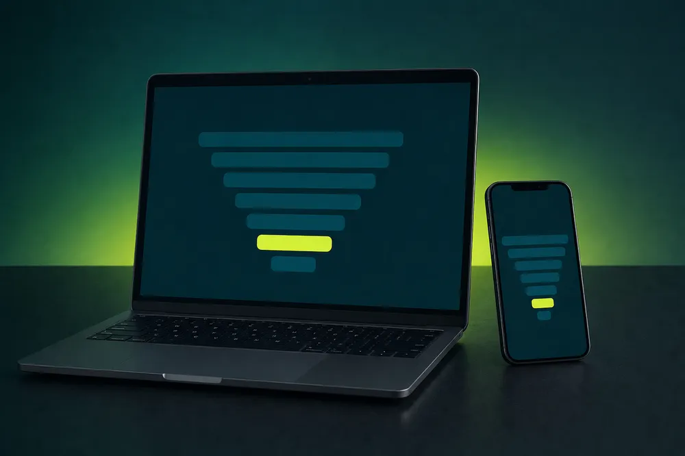

Você não precisa de mais leads. Precisa parar de perder os que já chegam.
Funil Sem Vazamento mostra, etapa por etapa, onde o seu funil de vendas perde negócios e como consertar o maior vazamento primeiro. Com modelos prontos para o RD Station CRM.
Parece falta de lead.
Quase nunca é.
O lead pediu orçamento na segunda. O vendedor ligou na quinta. Ele já tinha fechado com outro.
A proposta foi enviada. Ninguém cobrou. Ela continua "em negociação" há 40 dias.
O marketing diz que mandou lead bom. Vendas diz que era lead ruim. Ninguém tem o número.
O mês fecha abaixo da meta e a resposta é sempre a mesma: "precisamos de mais leads".
Cada cena dessas é um vazamento. Comprar mais lead sem fechar o vazamento é encher um balde furado.
O Mapa de Vazamentos: três passos, um conserto por vez
Em vez de mexer em tudo ao mesmo tempo, você descobre onde o funil perde mais e começa por ali.
Medir
Você mede quantos passam de uma etapa para a próxima. Cinco números, sem planilha complicada.
Encontrar
A pior passagem aparece sozinha. Em geral é uma só, e quase nunca é onde você imaginava.
Consertar
Você aplica o conserto daquela etapa (cadência, prazo de contato, critério de qualificação) e mede de novo na semana seguinte.
Seis módulos, na ordem em que o lead anda
Mapa de Vazamentos
As 5 etapas do funil e os números que importam em cada uma.
Captação que qualifica
Formulário, perguntas certas e pontuação de lead para o vendedor falar com quem vai comprar.
Passagem de bastão
Prazo de contato, distribuição de leads e o acordo entre marketing e vendas.
Cadência de follow-up
E-mail, WhatsApp e ligação em sequência, com modelos de mensagem.
Proposta e fechamento
Como cobrar sem ser chato e registrar o motivo de cada perda.
Painel semanal
A reunião de 30 minutos que mantém o funil limpo.
Você não sai com anotação. Sai com o funil montado.
Feito para quem já tem lead chegando
É para você se
- Já recebe leads e sente que vende menos do que deveria
- Quer saber em que etapa o negócio morre
- Usa ou vai usar RD Station Marketing e CRM
Não é para você se
- Ainda não tem nenhum lead chegando
- Procura fórmula para triplicar vendas em uma semana
- Não vai abrir o CRM depois do curso
Quem monta funil todo dia, dentro do RD Station
A AUTZ é consultoria parceira TOTVS especializada na unidade de negócios RD Station. O conteúdo do curso sai do dia a dia de implementações de Marketing, CRM e Conversas em empresas de vários setores.
Top 5 entre os maiores em MRR do ecossistema
Tudo para fechar o primeiro vazamento ainda esta semana

Funil Sem Vazamento
- 6 módulos em aulas curtas
- Modelo de funil para o RD Station CRM
- Cadência de follow-up e roteiros de WhatsApp
- Planilha do Mapa de Vazamentos
- Checklist de implantação em 7 dias
- Acesso por 12 meses
Um negócio recuperado no mês costuma pagar o curso.
Quero fechar meus vazamentosGarantia de 7 dias
Assista, use os modelos e decida. Se não fizer sentido para você, devolvemos 100% do valor, sem perguntas.
Perguntas frequentes
Preciso ter RD Station?
Não. O método vale para qualquer CRM. Os modelos prontos são do RD Station CRM, que tem plano gratuito.
Quanto tempo leva?
As aulas são curtas. A ideia é aplicar o primeiro conserto já na primeira semana.
Serve para venda B2C?
Serve para qualquer venda que tem contato antes do fechamento: orçamento, visita, reunião ou proposta.
E se eu quiser que a AUTZ implemente para mim?
No fim do curso você encontra o caminho para falar com o time e fazer a implementação junto com a gente.
Como recebo o acesso?
Por e-mail, logo após a confirmação do pagamento.